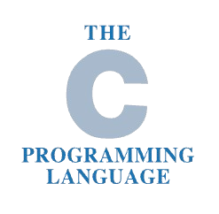
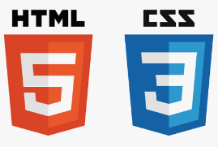

My story with the language
My misadventures in the domain of forcing a piece of
electrically charged inanimate metal to display things
or do something started back when I was in Grade 7.
I remember pretty clearly that my mom just suggested,
after a friend of hers mentioned a new coding academy
that was somewhat close to our home, that I go learn some
programming there. And so I went, and there I learned
Python as my first language.
I have, among the handful of programmming languages I know, the most experience with Python, seeing as it's the one I've know the longest and have the most experience with.
About the classes I mentioned, I actually stopped doing them after about half a year, or a year and a half. For something as instrumental as this to my progression as a coder, I remember surprisingly little how the classes went and what I was taught during them. However, I do remember that the really dumb reason for which I stopped was because I just couldn't understand all the string methods in Python. In hindsight, it was a beginner class, and we didn't do too much project work. In any case, every now and then when I code, I remember those classes. I lie the praise squarely at that little class' feet whenever I feel like I can code - it gave me pretty solid foundations to keep exploring, learning, and building on my own. In any case, this is why I say, in situations resembling this, that coding is my second love that I've came back to.
In any case, not being the first is OK. To remember what I've once read, "if you really liked the first person, you wouldn't have fallen for a second." Besides, it's pretty fun.
My Python ProjectsMy story with the language
This one's for FTC. The other thing that's became my second love.
If Python will help me build projects good enough to beef up my technical profile,
Java will get me - and the rest of my FTC team - to Texas. And hopefully win.
I guess it helps me towards that first goal as well.
I know Java for this singular purpose; due to that, I don't have any projects in Java.

My story with the language
My newest repertoire addition. However, I will be
fully honest and say that I probably won't use it
for any of my projects, because oh my god, string
parsing in C is something I don't want to ever do again.
Unfortunately, I can't recall any of my projects where
I don't need to parse strings.
I learned C while completing CS50. However, despite its tediousness, I must agree that learning C has helped me understand the underlying architecture of computers a lot more than I think I would have ever cared to learn had I only learned Python. That is to say, I think it's a good thing I at least generally know the language. Who knows if I'll use it in the future.

My story with the language
I think you can judge by the way I've made this website that I know enough HTML
to make a website, but definitely not enough to make a GOOD website.
Recall my inability to make anything look very appealing, as mentioned in the school page.
However,
out of the three projects I did for Stardance, this one is definitely the
most simple out of the tree technically, because HTML isn't a language, if you may recall.
So no uncatchable logic errors. Thank god.
I don't have any frontend-heavy projects yet except for this one.